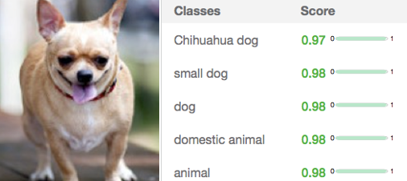

Documentation
What is Bellosguardo?
Bellosguardo is a web application that helps decision makers and subject matter experts in finding decision thresholds that maximize the accuracy of images classification.
How?
Without any coding skill required, in Bellosguardo is possible to:
- upload image sets (that you will use as test or training sets)
- train and test classifiers (with IBM Watson Visual Recognition)
- evaluate performances and fine-tune classifiers (leveraging Bellosguardo's metrics)
Why?
Most public-available image recognition services produce a score between 0.0 and 1.0 for each image (and for each class). This value is not a percentage or a probability, but a unitless number that indicates the confidence of the service in recognizing a specific class.
Depending on the goal of the application, a specific score may be requested in order to take actions or generate decisions upon it. This value is called "decision threshold" and it is not (and cannot be) computed by image recognition services automatically.

Bellosguardo uses the IBM Watson Visual Recognition service to train classifiers and statistical methods to evaluate them. The results is a user friendly environment that gives control along the whole image classification journey.
For details about statistical testing, please see the section below.
Statistical Testing
In order to evaluate classifiers performances, Bellosguardo measures:
1. Receiver Operating Characteristics curve (ROC) and Distribution Curve
2. Accuracy and Area Under the Curve (AUC)
3. Optimal Threshold
4. False Positive and False Negative results
A ROC curve is "a graphical plot that illustrates the diagnostic ability of a binary classifier system as its discrimination threshold is varied."
In the case of Bellosguardo, the curve is created by plotting the true positive rate (TPR) against the false positive rate (FPR) at various Watson's score variations.
The true-positive rate is also known as sensitivity, recall or probability of detection; the false-positive rate is also known as the fall-out or probability of false alarm and can be calculated as (1 - specificity). TPR defines how many correct positive results occur among all positive samples available during the test; FPR defines how many incorrect positive results occur among all negative samples available during the test: TPR = TP/(TP+FN); FPR = FP/(FP+TN)
How to use Bellosguardo
Bellosguardo is a web application that helps decision makers and subject matter experts in finding decision thresholds that maximize the accuracy of images classification.
How to upload images
You can upload images that can be used for training or test purposes by clicking on the drop down menu "upload dataset".
Once in the page, in the TAB of the positive images click on Browse to upload the positive images, select the images from your PC and click OK. Repeat the same task for the negative images. When you have browsed both positive and negative images you must click upload button. When you have finished to browse the images specify if the images will be used for training or test, the click "Upload image set" button.
You must give a name to the set of images and you give the label of the images to categorize them.
Once you have entered those info you just wait the message that confirm you that the images are successfully uploaded and then you are able to see them in the dashboard.
How you train IBM Watson with your training set pics
After you have uploaded your images you are able to train IBM Watson with them. Click on "train - train a new classifier" of the drop down menu in the home page.
In the page displayed you have to click on "select train dataset". A dropdown menu is displayed and you can choose the image set between the ones you have uploaded. The positive and negative images are displayed in the page so you can check if there is any mistake. You can put a short name and a short description of the classifier in order to summarize the characteristic.
When you're done you click on "start training". The train will start, you can return to the dashboard page and the classifier will appear in the classifier list when training process is complete. The operation can take few minutes so remember to re-load the dashboard sometimes.
How to run a test
After you have uploaded the images set, and you have trained at least one classifier you can run a test. You click on "simulate - run new test".
You need to put a name for the test, select a test dataset (the images you want to test) and select a classifier (the images you have trained). It is not suggested to use the same picture set for classifier are test.
You can make more than one test run in parallel by clicking the add test icon: a new row will appear where you can input other test images and other classifier. If you run more contemporary test you can easily compare the results.
You can also delete a test by clicking the icon if you decide you don't want to run it.
Once you have finished to select all the images for test and training you can start your test by clicking the run simulation icon. The result will be displayed as soon as the test is finished.
How to save test result
If you want to save the result of the test you ran, you can choose to save to DB or to save the JSON file.
Save to DB: …
Save to JSON file: click on "save to JSON file" button. A pop up will open asking you to open or save file. Click on Save option. The JSON file will be downloaded on your PC.
If you want to see the result you must click on "simulate - explore previous test". Click on "browse" and select the file with the test you want to display. Click on "import". You can click on the icon if you don't want to see the result of one specific test. Then click on “view test result” to have the result displayed.
- What is Bellosguardo?
- How?
- Why?
- Statistical testing
- How to use Bellosguardo
- How to upload images
- How you train IBM Watson with your training set pics
- How to run a test
- How to save test result